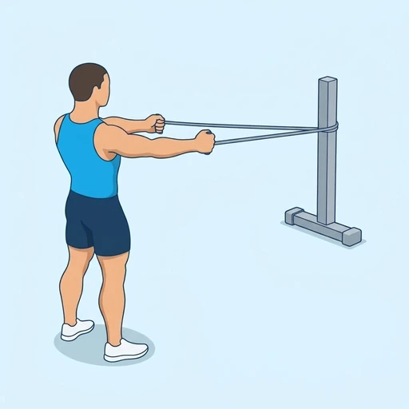
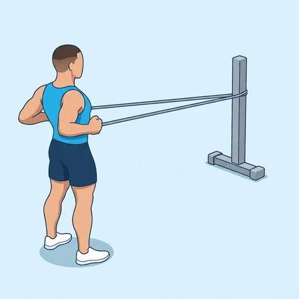

Banded Standing Row
A standing row with a resistance band anchored in front of you at about chest height. You pull your elbows back toward your ribs and squeeze your shoulder blades together, then return slowly. It trains the muscles of the upper back and the rear of the shoulders without gym equipment.
Back · Resistance Band · Beginner


Muscles worked by the Banded Standing Row
Primary
Secondary
Also called: lats, lat, latissimus dorsi, latissimus, back wings, rhomboid.
Equipment
Also called: power band, pull-up band, assistance band, tube band, tubing band, long resistance band.
How to do the Banded Standing Row
- Anchor a resistance band at about chest height, stand facing it with one end in each hand, and step back until the band is under light tension.
- Stand tall with your feet hip-width apart and your knees slightly bent, with your arms stretched out in front of you.
- Pull your elbows back along your sides and bring your hands toward your lower ribs.
- Squeeze your shoulder blades together at the end of the pull without shrugging.
- Slowly stretch your arms forward again, resisting the band.
- Complete the planned repetitions.
Form tips
- Lead with your elbows and keep your shoulders down, away from your ears.
- Keep your trunk still; if you lean back to finish the pull, use a lighter band or step closer to the anchor.
- Control the return; the slow release is half of the exercise.
At a glance
| Body part | Back |
|---|---|
| Category | Strength |
| Force type | Pull |
| Mechanic | Compound |
| Difficulty | Beginner |
| Equipment | Resistance Band |
| Goals | Hypertrophy |
| Tags | Pull day, Knee safe, No axial load, Lower back safe, Shoulder safe |
| MET | 6.0 (metabolic equivalent, for calorie estimates) |
| Unilateral | No |
| Bodyweight | No |
| Dataset id | banded-standing-row |
Banded Standing Row in German & Spanish
| German | Stehendes Rudern mit Band |
|---|---|
| Spanish | Remo de Pie con Banda |
Descriptions, instructions and tips ship in all three languages in the JSON.
Related exercises
Exercise data (JSON)
The record below is exactly what exercises.json ships for this exercise — names, descriptions, instructions and tips in English, German and Spanish.
{
"id": "banded-standing-row",
"name_en": "Banded Standing Row",
"name_de": "Stehendes Rudern mit Band",
"name_es": "Remo de Pie con Banda",
"description_en": "A standing row with a resistance band anchored in front of you at about chest height. You pull your elbows back toward your ribs and squeeze your shoulder blades together, then return slowly. It trains the muscles of the upper back and the rear of the shoulders without gym equipment.",
"description_de": "Ein Rudern im Stand mit einem Widerstandsband, das vor dir etwa auf Brusthöhe befestigt ist. Du ziehst die Ellbogen zu den Rippen nach hinten und drückst die Schulterblätter zusammen, dann gehst du langsam zurück. Es trainiert die Muskeln des oberen Rückens und der hinteren Schulter ohne Studiogeräte.",
"description_es": "Un remo de pie con una banda elástica anclada frente a ti a la altura del pecho. Llevas los codos hacia atrás, hacia las costillas, y juntas los omóplatos, y luego vuelves despacio. Trabaja los músculos de la parte alta de la espalda y la parte posterior de los hombros sin necesidad de equipamiento de gimnasio.",
"category": "strength",
"force_type": "pull",
"mechanic": "compound",
"difficulty": "beginner",
"equipment": "resistance_band",
"body_part": "back",
"primary_muscles": [
"latissimus_dorsi",
"rhomboids"
],
"secondary_muscles": [
"biceps_brachii",
"posterior_deltoid",
"trapezius"
],
"goals": [
"hypertrophy"
],
"tags": [
"pull_day",
"knee_safe",
"no_axial_load",
"lower_back_safe",
"shoulder_safe"
],
"variation_group": "row",
"is_unilateral": false,
"is_bodyweight": false,
"instructions_en": [
"Anchor a resistance band at about chest height, stand facing it with one end in each hand, and step back until the band is under light tension.",
"Stand tall with your feet hip-width apart and your knees slightly bent, with your arms stretched out in front of you.",
"Pull your elbows back along your sides and bring your hands toward your lower ribs.",
"Squeeze your shoulder blades together at the end of the pull without shrugging.",
"Slowly stretch your arms forward again, resisting the band.",
"Complete the planned repetitions."
],
"instructions_de": [
"Befestige ein Widerstandsband etwa auf Brusthöhe, stell dich mit dem Gesicht dazu, ein Ende in jeder Hand, und geh zurück, bis das Band unter leichter Spannung steht.",
"Steh aufrecht, die Füße hüftbreit und die Knie leicht gebeugt, die Arme nach vorn gestreckt.",
"Ziehe die Ellbogen an den Seiten entlang nach hinten und bringe die Hände zu den unteren Rippen.",
"Drücke am Ende des Zuges die Schulterblätter zusammen, ohne die Schultern hochzuziehen.",
"Strecke die Arme langsam wieder nach vorn und gib dem Band dabei Widerstand.",
"Absolviere die geplante Anzahl an Wiederholungen."
],
"instructions_es": [
"Ancla una banda elástica a la altura del pecho, colócate frente a ella con un extremo en cada mano y da un paso hacia atrás hasta que la banda quede con una tensión ligera.",
"Ponte erguido con los pies separados al ancho de las caderas y las rodillas ligeramente flexionadas, con los brazos estirados al frente.",
"Lleva los codos hacia atrás pegados a los costados y acerca las manos a las costillas inferiores.",
"Junta los omóplatos al final del tirón sin encoger los hombros.",
"Estira los brazos hacia adelante de nuevo despacio, resistiendo a la banda.",
"Completa el número de repeticiones previsto."
],
"tips_en": [
"Lead with your elbows and keep your shoulders down, away from your ears.",
"Keep your trunk still; if you lean back to finish the pull, use a lighter band or step closer to the anchor.",
"Control the return; the slow release is half of the exercise."
],
"tips_de": [
"Führe mit den Ellbogen und halte die Schultern tief, weg von den Ohren.",
"Halte den Oberkörper ruhig; wenn du dich zurücklehnst, um den Zug zu beenden, nimm ein leichteres Band oder geh näher an den Befestigungspunkt.",
"Kontrolliere den Rückweg; das langsame Nachlassen ist die halbe Übung."
],
"tips_es": [
"Lidera el movimiento con los codos y mantén los hombros bajos, lejos de las orejas.",
"Mantén el tronco quieto; si te inclinas hacia atrás para terminar el tirón, usa una banda más ligera o acércate al anclaje.",
"Controla la vuelta; la liberación lenta es la mitad del ejercicio."
],
"met": 6.0,
"images": {
"flat": {
"start": "images/flat/banded-standing-row-start.webp",
"peak": "images/flat/banded-standing-row-peak.webp"
}
}
}Fetch just this exercise
const { exercises } = await fetch(
"https://exercise-dataset.com/exercises.json"
).then(r => r.json());
const ex = exercises.find(e => e.id === "banded-standing-row");Free for personal and commercial in-app use with attribution (“Exercise data by RepDB”) — see the license and ready-made attribution snippets. Redistributing the data as a dataset or API is not permitted.